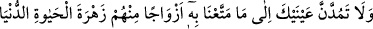

Bilesin ki tesbîh ile meşgul olmak, yalanlayanlara karşı tesbih edilenden yardım
dilemektir. Namaz da elemi izâle eden, sıkıntıları savan en büyük ilaçtır. Onun için
Nebî (a.s.) bir işte zorlandığı vakit hemen namaza sığınırdı. O’nun (s.a.), ümmetine en
son vasiyet ettiği şey de namaz ve kölelere iyi muâmeledir. Bu âyet, beş vakit namazın
tamamını kendisinde toplamaktadır.
Cerir b. Abdullah (r.a.)’ın şöyle dediği rivayet edilir: “(Bir gün) Rasûlullah’ın
huzurunda oturuyorduk. Ayın dolunay olduğu gecede onu gördü. Bunun üzerine: “Siz şu
ayı gördüğünüz gibi Rabbinizi göreceksiniz. Onu görürken herhangi bir sıkışıklık
yaşamayacaksınız. Eğer siz güneşin doğmasından ve batmasından önce (belirtilen
vakitlerde farz) namazı kılabilirseniz kılın.” buyurdu. Sonra da “…Rabbini hamd ile
tesbih et” âyetini okudu.[123]
İnsanlar Allâh’ı görürken birbirinin üzerine yığılmayacaktır. Hiç kimse “bana da
göster” demeyecektir. Bilakis herkes ayrı ayrı O’nu görecektir. Ya da maksad şudur:
“O’nu görme hususunda bir kısmınız diğerleri tarafından haksızlığa uğratılmaz. Bilakis
hepiniz Allah Teâlâ’yı görme hususunda aynı seviyede olacaksınız.”
Bir hadiste şöyle buyrulmuştur: “Münafıklar için en ağır namaz, yatsı ve sabah
namazlarıdır. Onlar bu iki vakitteki fazileti bilselerdi, sürünerek de olsa onlara
gelirlerdi.”[124]
Denilir ki: Beş vakit namazda cemâate devâm eden kişiden Allah, geçim darlığını ve
kabir azabını kaldırır. Onun kitabını sağından verir ve onu sırattan şimşek hızıyla
geçirir. Onu cennete hesapsız olarak koyar. Kim de cemâatle namaza devam etmekte
gevşeklik gösterirse, Allah onun rızkından ve kazancından bereketi kaldırır. Yüzünden,
salihlere mahsûs olan nûrânîliği giderir ve onun diğer amellerini de kabûl etmez.
İnsanların kalbinde ona karşı düşmanlık olur. Rûhunu aç ve susuz olarak kabz eder. Canı
zor çıkar. Kabirde Münker ve Nekir’in çetin sorularıyla, kabrinin karanlık ve dar,
hesabının şiddetli olmasıyla, Rabb’in gadabıyla ve Allâh’ın cehennem ateşiyle
cezalandırmasıyla mübtelâ olur.
Bir hadiste şöyle buyrulmuştur: “Ümmetim, merhamet olunmuş bir ümmettir. Allah
onlardan ihlâsları, namazları, duâları ve içlerinden zayıf olanlar sebebiyle belâları
kaldırmıştır.”[125]
Katâde’den rivayet edilmiştir: “Danyal (a.s.) Muhammed ümmetini şöyle
vasfetmiştir: “Onlar öyle namaz kılarlar ki onların kıldığı namazı Nuh kavmi kılsaydı,
suda boğulmazlardı. Âd kavmi kılsaydı, onların üzerine (helak edici) rüzgar
gönderilmezdi. Semûd kavmi kılsaydı, şiddetli çığlık onları yakalamazdı.”
Şu halde mü’mine gereken namazdan, duâdan ve Allah Teâlâ’ya ilticâdan
ayrılmamaktır.